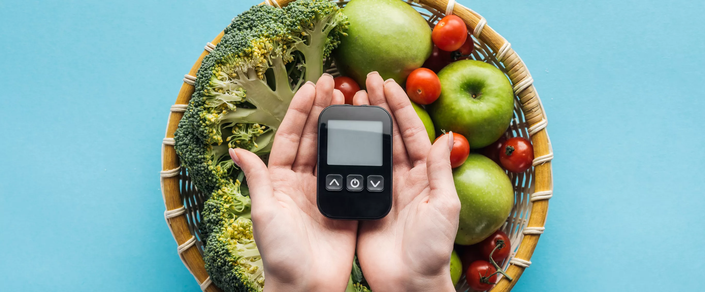

Impacto
À medida que as dietas veganas ganham popularidade em todo o país como uma forma de melhorar a saúde e o bem-estar dos animais, não é segredo que os efeitos ambientais dessa dieta podem ter um efeito positivo em nosso planeta.
A dieta mais ética acaba sendo a dieta mais ecologicamente correta e é a mais saudável